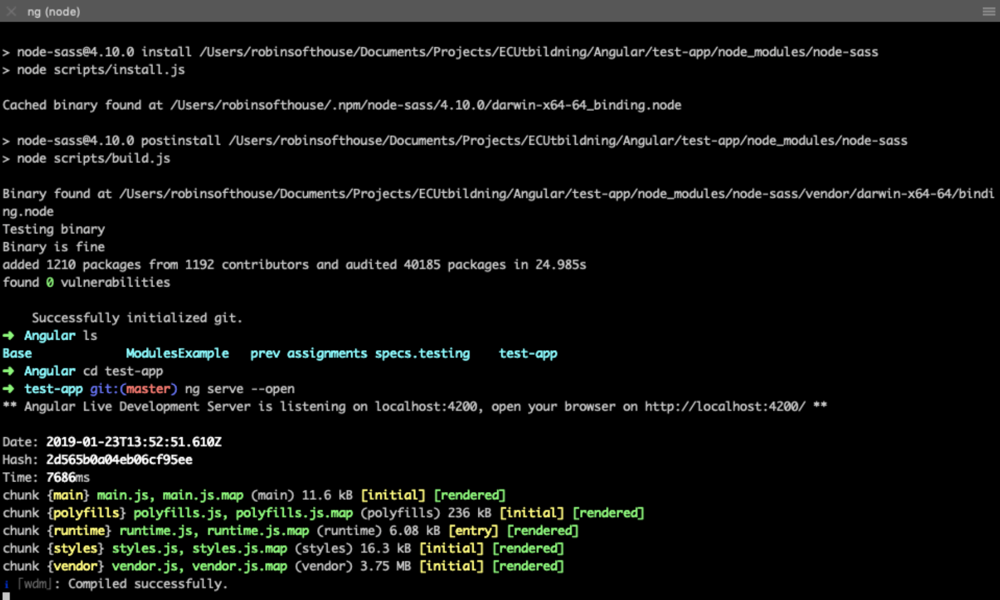

Node, Npm & TypeScript
Introduction
Command line
Node.js
Node.js
- Runs Javascript on your local machine and on server
- Uses v8 engine
- Node compiles JavaScript code into native code
Test it
- $ node -v
- $ npm -v
- $ npm install npm@latest -g
- Open in terminal and test
Npm
Node Package Manager
Web page
"NPM is a package manager for Node.js packages, or modules if you like. www.npmjs.com hosts thousands of free packages to download and use.The NPM program is installed on your computer when you install Node.js" - W3Schools
Npm
- Takes care of your node modules
- Handles which modules are dependent on which
- Imports modules in correct order
Basic Npm commands
- npm init
- npm install
- npm install --save -dev
- npm -v
Semantic versioning

- package.json - is a JSON file containing which modules that are needed in your project along with other information
- /node_modules - folder where your modules are stored
But why not CDN?
- What if the code fetched from the link changes?
- Easier to see the code when using Npm
- Using a CDN means another request to the server, you might have multiple.
npm
- You can create your own npm package and host on npm.js
- Download other packages
- Every package/module gets its own npm page, with a read me and GitHub link, + additional information about the package moment.js
npm - tips
TypeScript
- TypeScript is a typed superset of JavaScript.
- Compiles to plain JavaScript.
- Support annotations, interfaces, Classes, Decorators etc.
- Documentation
Basic types
Getting started
- $ npm install -g typescript (installs it globally on your machine)
- $ cd folder/
- $ tsc file.ts